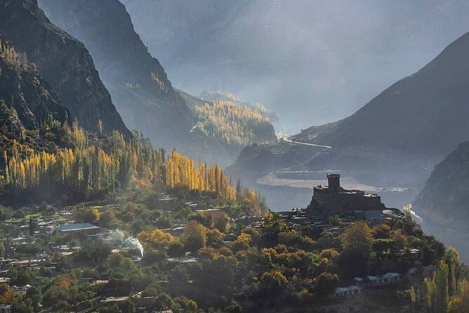
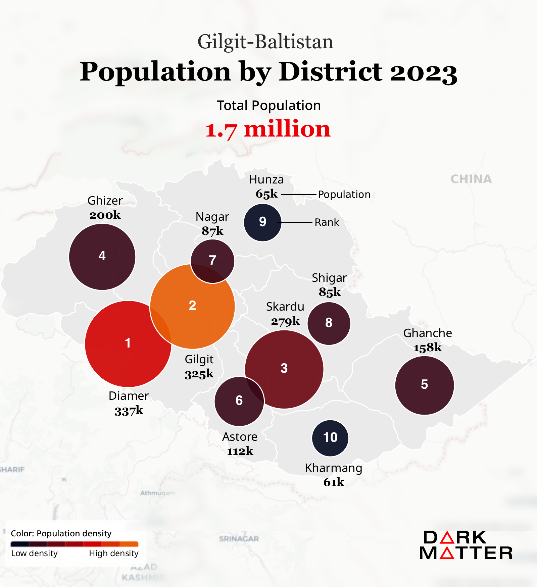

A data-driven overview of Gilgit-Baltistan — Pakistan's northernmost territory — spanning population, geography, and household demographics across its ten districts.

Gilgit-Baltistan (GB) is Pakistan's largest administrative territory by area, bordering China, Afghanistan, and the Indian-administered Kashmir. Often called the "roof of the world," it is home to some of the highest mountain peaks on the planet, including K2. Despite its vast and dramatic landscape, GB remains one of the least densely populated regions in South Asia. The data below draws on the 2017 and 2023 censuses to present a snapshot of the territory's population geography.
Total Population
1.71M
Census 2023
Population Growth
+14.5%
↑ 216,364 since census 2017
Total Area
72,496
km² across 10 districts
Avg. Density
24/km²
Population per sq. kilometre
Avg. Household Size
7.33
Persons per household
Sex Ratio
109
Males per 100 females

Select a metric below to compare districts visually. Bars are sorted from highest to lowest.
Each row shows a district's population in 2017 (hollow dot) and 2023 (filled dot), sorted by growth rate. The connecting line spans the change between the two censuses.
The data reveals a territory of stark contrasts: Gilgit city and Diamer host the largest concentrations of people, while Hunza and Kharmang remain sparsely settled despite their geographic scale. The high average household size of 7.33 persons reflects the predominantly rural character of most districts. The sex ratio of 109 — slightly above the national average — is consistent with patterns seen in other mountainous and conservative regions of Pakistan.
Gilgit-Baltistan's economy is characterised by low industrialisation, subsistence agriculture, and an expanding services sector driven largely by tourism. The territory is heavily reliant on federal transfers, though its economic base is gradually diversifying as connectivity and infrastructure improve.
Tourism is the fastest-growing sector in GB's economy. Arrivals climbed from around 53,000 in 2010 to over 1.4 million in 2018, driven by social media exposure, improved road connectivity, and CPEC-linked infrastructure. The COVID-19 pandemic caused a sharp contraction in 2020, reducing foreign arrivals to just over 1,000. Recovery was swift — by 2024, total arrivals approached 1.01 million, with foreign visitors reaching a record 20,490. Hunza, with 175,205 tourists in 2023, is the most-visited district, reflecting its accessibility, scenery, and relatively developed hospitality infrastructure.
The economic footprint of tourism extends beyond headcounts. Tourist spending grew from PKR 3.3 billion in 2010 to a peak of PKR 94 billion in 2018, representing 0.34% of GB's GDP. The post-COVID recovery has been steady, reaching PKR 75.8 billion in 2024.
Agriculture remains the primary livelihood for most of GB's rural population. The territory's terraced valleys — especially in Hunza, Ghizer, and Skardu — produce apricots, cherries, walnuts, apples, and potatoes, much of it for domestic consumption. Only about 2–3% of the total land area is arable, constrained by extreme terrain and glacial cover. Irrigated farming using glacial melt channels is central to agricultural systems across the region.
GB holds an estimated 40,000 MW of exploitable hydropower potential — roughly 43% of Pakistan's total. Yet current installed capacity falls far short of demand. In 2023, total power generation across all ten districts stood at approximately 263 MW against a combined demand of 761 MW, a gap that drives chronic load-shedding and acts as a binding constraint on industrial and economic development. Gilgit district accounts for the largest share of both generation (92.7 MW) and demand (167 MW), reflecting its role as the administrative and commercial centre of the territory.
Data sources: Pakistan Bureau of Statistics — District Census Results 2023; GB Tourism Department; PPIB / AEDB hydropower data.
Back to BlogImproving the well-being of rural communities is one of the most important challenges faced by the developing world today.